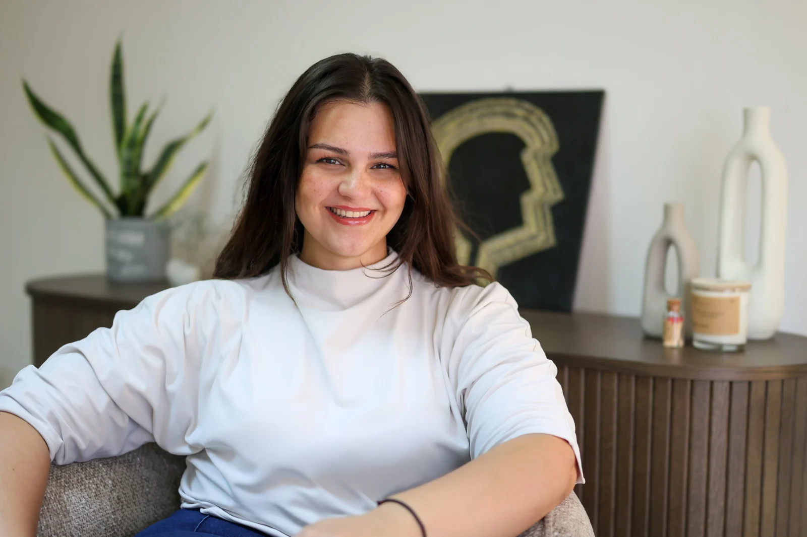
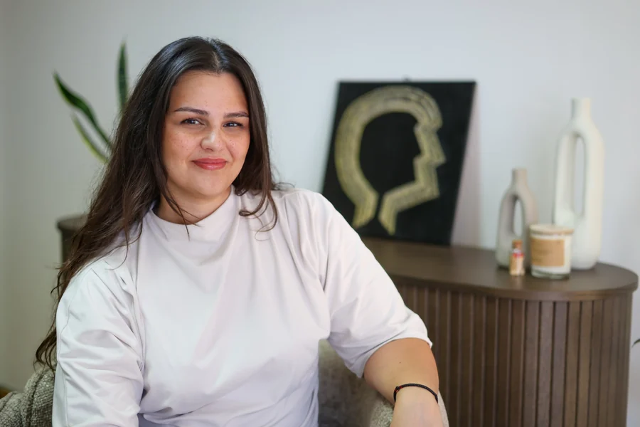
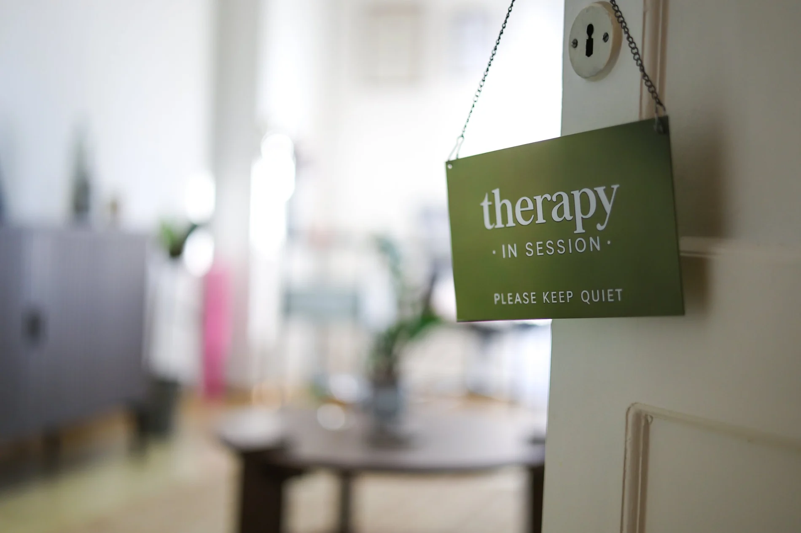
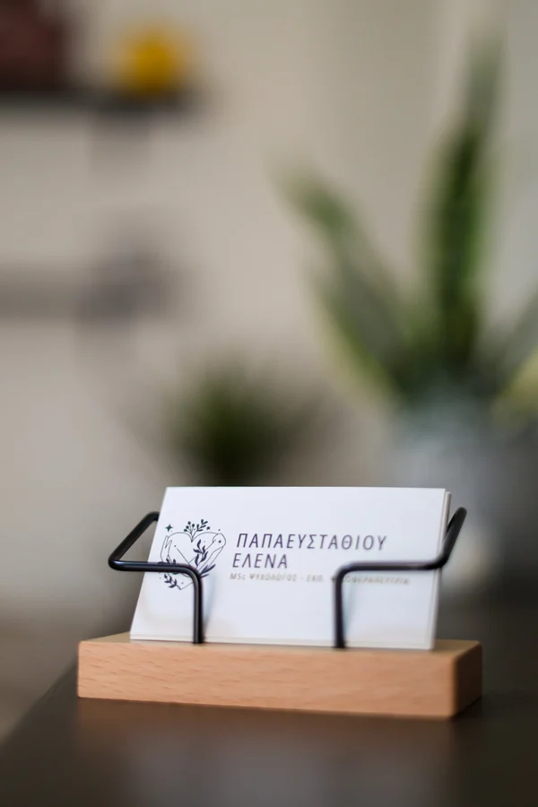
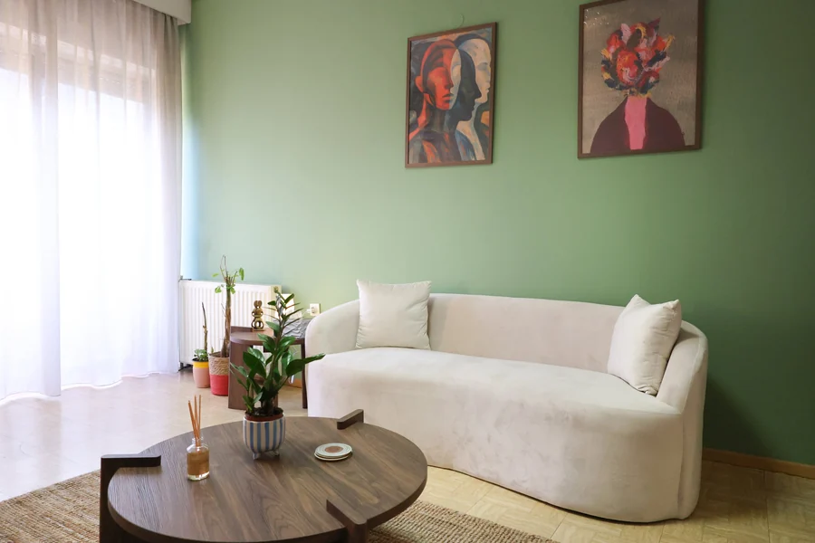
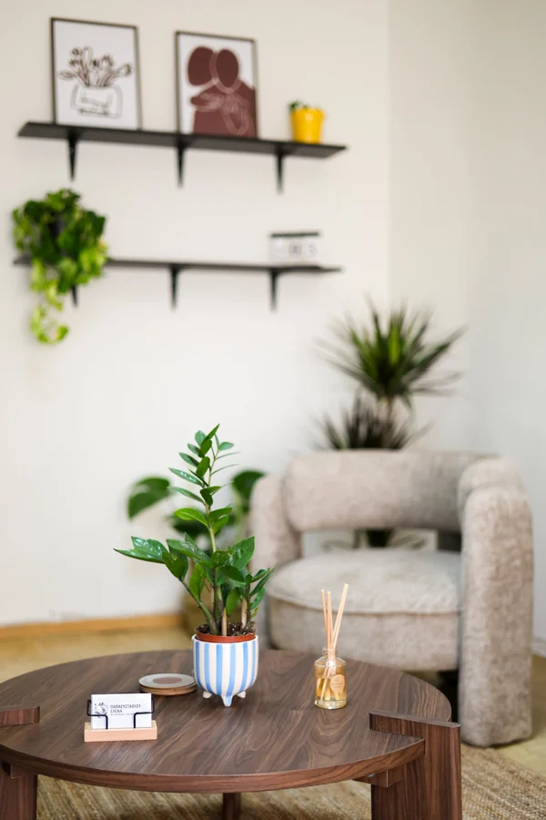
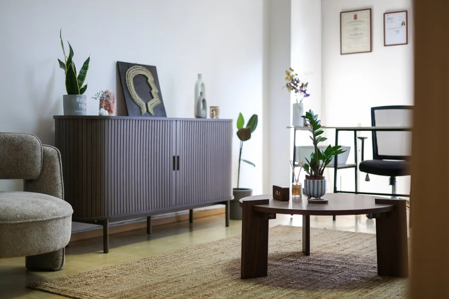
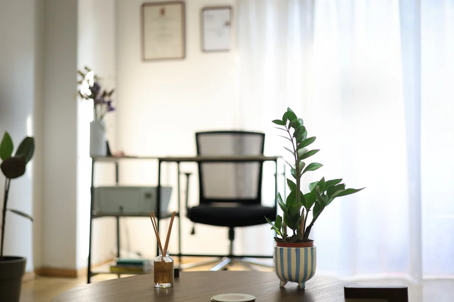

Εγνατία 81Α · κέντρο Θεσσαλονίκης · δια ζώσης & online
Έλενα ΠαπαευσταθίουΨυχολόγος – Ψυχοθεραπεύτρια CBT στη Θεσσαλονίκη
Ψυχοθεραπεία ενηλίκων με τη Γνωστική Συμπεριφορική Θεραπεία — ένας ασφαλής χώρος χωρίς κριτική, για να κατανοήσετε όσα περνάτε και να βρείτε ξανά τις ισορροπίες σας.

δεκάδες αξιολογήσεις
- 10/10στο doctoranytime, από δεκάδες αξιολογήσεις
- 5,0στο Google
- 120+ώρες θεραπευτικών συνεδριών
- EABCTπιστοποίηση στη CBT
- 140 μ.από τον σταθμό Αγία Σοφία
Σχετικά με εμένα
Έλενα Παπαευσταθίου, ψυχολόγος – ψυχοθεραπεύτρια στη Θεσσαλονίκη


Είμαι ψυχολόγος – ψυχοθεραπεύτρια, απόφοιτη του Τμήματος Ψυχολογίας του Παντείου Πανεπιστημίου, με άδεια ασκήσεως επαγγέλματος ψυχολόγου. Εργάζομαι ιδιωτικά στο γραφείο μου στην Εγνατία, στο κέντρο της Θεσσαλονίκης, με ατομικές συνεδρίες ενηλίκων — δια ζώσης και online.
Παράλληλα συνεργάζομαι με το Ψυχοθεραπευτικό Κέντρο «Στήριξις». Έχω ολοκληρώσει περισσότερες από 120 ώρες θεραπευτικών συνεδριών και 50 ώρες εποπτείας, με κύριο θεραπευτικό προσανατολισμό τη Γνωστική Συμπεριφορική Ψυχοθεραπεία (CBT).
Εκπαιδεύτηκα στη CBT στην Ελληνική Εταιρεία Έρευνας της Συμπεριφοράς – Παράρτημα Μακεδονίας, με πιστοποίηση επάρκειας από την EABCT, και συνεχίζω με μεταπτυχιακές σπουδές στο πρόγραμμα «Κλινική Ψυχική Υγεία» της Ιατρικής Σχολής του ΑΠΘ. Έχω παρακολουθήσει εκπαιδεύσεις στη Θεραπεία Σχημάτων, στις διατροφικές διαταραχές, στην αντιμετώπιση αρνητικών συναισθημάτων και στη σχολική ψυχολογία.
Στόχος μου είναι ένας ασφαλής, υποστηρικτικός και μη επικριτικός χώρος, όπου μπορείτε να εκφραστείτε ελεύθερα, να κατανοήσετε βαθύτερα τον εαυτό σας και να ενισχύσετε την ψυχική σας ανθεκτικότητα. Βλέπω την ψυχοθεραπεία ως μια συνεργασία — με ενσυναίσθηση, αυθεντικότητα και σεβασμό στη μοναδικότητα του κάθε ανθρώπου.
«Η ψυχοθεραπεία είναι μια συνεργατική διαδικασία που μπορεί να οδηγήσει σε ουσιαστική προσωπική ανάπτυξη.»
- ΠροσέγγισηΓνωστική Συμπεριφορική (CBT)
- Συνεδρίες50′ · δια ζώσης ή online
- ΓλώσσεςΕλληνικά, Αγγλικά
- 2025Μεταπτυχιακό (MSc) «Κλινική Ψυχική Υγεία»Ιατρική Σχολή, Αριστοτέλειο Πανεπιστήμιο Θεσσαλονίκης
- 2022Πιστοποίηση στη Γνωστική Συμπεριφορική Θεραπεία (EABCT) · 4ετής εκπαίδευσηΕλληνική Εταιρεία Έρευνας της Συμπεριφοράς – Παράρτημα Μακεδονίας
- 2017 – 2022Πτυχίο Ψυχολογίας (BSc)Πάντειο Πανεπιστήμιο Κοινωνικών και Πολιτικών Επιστημών
- 2026 – σήμεραΨυχολόγος – Ψυχοθεραπεύτρια (CBT), ιδιωτικό γραφείο, Θεσσαλονίκη
- 2024 – σήμεραΨυχολόγος – Ψυχοθεραπεύτρια, Ψυχοθεραπευτικό Κέντρο «Στήριξις»
Θεραπεία
Ψυχοθεραπεία ενηλίκων στο κέντρο της Θεσσαλονίκης
Ατομικές συνεδρίες 50 λεπτών, δια ζώσης στην Εγνατία ή online με βιντεοκλήση. Υπάρχει ειδικό κόστος για άτομα με αναπηρία, ανέργους και φοιτητές.
Ψυχοθεραπεία ενηλίκων με CBT
Η Γνωστική Συμπεριφορική Θεραπεία (CBT) εξετάζει πώς συνδέονται οι σκέψεις, τα συναισθήματα, οι σωματικές αντιδράσεις και οι συμπεριφορές μας. Μαζί εντοπίζουμε τα μοτίβα που σας κρατούν πίσω, θέτουμε σαφείς στόχους και δουλεύουμε με πρακτικά εργαλεία που μπορείτε να χρησιμοποιήσετε και ανάμεσα στις συνεδρίες. Είναι μια δομημένη, συνεργατική προσέγγιση με ισχυρή επιστημονική τεκμηρίωση, που προσαρμόζεται σε ό,τι φέρνει ο καθένας. Κάθε συνεδρία διαρκεί 50 λεπτά.
Άγχος, κρίσεις πανικού & φοβίες
Όταν το άγχος γίνεται διαρκές, όταν μια κρίση πανικού σας κάνει να αποφεύγετε το μετρό, τα μαγαζιά ή τη μοναξιά, ή όταν ένας φόβος μικραίνει την καθημερινότητά σας, η CBT έχει από τα πιο αποτελεσματικά εργαλεία. Μαθαίνουμε να καταλαβαίνουμε τι συμβαίνει στο σώμα και στη σκέψη τη στιγμή του άγχους, να ξαναβλέπουμε τις καταστροφικές ερμηνείες και — σταδιακά, με τον δικό σας ρυθμό — να επιστρέφουμε σε όσα αποφεύγετε.
Κατάθλιψη & διαταραχές διάθεσης
Κούραση που δεν φεύγει, απόσυρση από όσα σας ευχαριστούσαν, μια φωνή μέσα σας που λέει ότι τίποτα δεν θα αλλάξει. Στη θεραπεία εντοπίζουμε τις σκέψεις και τις συνήθειες που κρατούν τη διάθεση χαμηλά, ξαναχτίζουμε σιγά σιγά τη δραστηριότητα και τη φροντίδα του εαυτού, και δουλεύουμε με τις πιο βαθιές πεποιθήσεις για την αξία σας — σε έναν χώρο χωρίς κριτική, όπου μπορείτε να πείτε πώς νιώθετε πραγματικά.
Διατροφικές διαταραχές
Η σχέση με το φαγητό, το σώμα και την εικόνα του εαυτού μπορεί να γίνει πηγή μεγάλης έντασης, ενοχής ή ντροπής. Έχω εκπαιδευτεί ειδικά στις διατροφικές διαταραχές και δουλεύω με την CBT, με σεβασμό και χωρίς κριτική: κατανοούμε τι πυροδοτεί τα επεισόδια, τι εξυπηρετούν οι αυστηροί κανόνες και πώς η αξία μας μπορεί να πάψει να εξαρτάται από το βάρος ή την εμφάνιση.
Τραυματικές εμπειρίες
Μια δύσκολη ή τραυματική εμπειρία μπορεί να συνεχίζει να επηρεάζει τον ύπνο, τις σχέσεις και την αίσθηση ασφάλειας, ακόμη κι όταν έχει περάσει καιρός. Προχωράμε με προσοχή και με τον δικό σας ρυθμό: πρώτα χτίζουμε σταθερότητα και τρόπους να ηρεμεί το σώμα, και μετά επεξεργαζόμαστε όσα συνέβησαν, ώστε η ανάμνηση να πάψει να ορίζει το παρόν.
Διαταραχές προσωπικότητας
Έντονα συναισθήματα που αλλάζουν γρήγορα, σχέσεις που γίνονται συχνά πεδίο σύγκρουσης, μοτίβα που επαναλαμβάνονται όσο κι αν προσπαθείτε. Η θεραπεία δίνει χώρο να κατανοήσουμε πώς σχηματίστηκαν αυτά τα μοτίβα και να βρούμε πιο λειτουργικούς τρόπους να διαχειρίζεστε τα συναισθήματα και τις σχέσεις σας. Οι εκπαιδεύσεις μου στη Θεραπεία Σχημάτων βοηθούν να δούμε και όσα ξεκίνησαν νωρίς στη ζωή.
Ψυχοσωματικά συμπτώματα
Πονοκέφαλοι, στομάχι, ένταση, ταχυκαρδία — συμπτώματα που ο γιατρός δεν εξηγεί πλήρως αλλά επηρεάζουν πραγματικά τη ζωή σας. Σώμα και ψυχή δεν λειτουργούν χωριστά. Στη θεραπεία συνδέουμε τα σωματικά σήματα με το στρες, τα συναισθήματα και τις σκέψεις που τα συνοδεύουν, και μαθαίνουμε τρόπους χαλάρωσης και διαχείρισης που μειώνουν την ένταση.
Σεξουαλικός προσανατολισμός & ταυτότητα φύλου
Ένας χώρος αποδοχής για ερωτήματα και εμπειρίες γύρω από τον σεξουαλικό προσανατολισμό και την ταυτότητα φύλου — την αυτοαποδοχή, το coming out, τις σχέσεις με την οικογένεια, το στίγμα ή τις διακρίσεις. Δεν χρειάζεται να εξηγήσετε ή να υπερασπιστείτε ποιοι είστε: η θεραπεία ξεκινά από εκεί που βρίσκεστε και από ό,τι σας απασχολεί.
01Ψυχοθεραπεία ενηλίκων με CBT
Η Γνωστική Συμπεριφορική Θεραπεία (CBT) εξετάζει πώς συνδέονται οι σκέψεις, τα συναισθήματα, οι σωματικές αντιδράσεις και οι συμπεριφορές μας. Μαζί εντοπίζουμε τα μοτίβα που σας κρατούν πίσω, θέτουμε σαφείς στόχους και δουλεύουμε με πρακτικά εργαλεία που μπορείτε να χρησιμοποιήσετε και ανάμεσα στις συνεδρίες. Είναι μια δομημένη, συνεργατική προσέγγιση με ισχυρή επιστημονική τεκμηρίωση, που προσαρμόζεται σε ό,τι φέρνει ο καθένας. Κάθε συνεδρία διαρκεί 50 λεπτά.
02Άγχος, κρίσεις πανικού & φοβίες
Όταν το άγχος γίνεται διαρκές, όταν μια κρίση πανικού σας κάνει να αποφεύγετε το μετρό, τα μαγαζιά ή τη μοναξιά, ή όταν ένας φόβος μικραίνει την καθημερινότητά σας, η CBT έχει από τα πιο αποτελεσματικά εργαλεία. Μαθαίνουμε να καταλαβαίνουμε τι συμβαίνει στο σώμα και στη σκέψη τη στιγμή του άγχους, να ξαναβλέπουμε τις καταστροφικές ερμηνείες και — σταδιακά, με τον δικό σας ρυθμό — να επιστρέφουμε σε όσα αποφεύγετε.
03Κατάθλιψη & διαταραχές διάθεσης
Κούραση που δεν φεύγει, απόσυρση από όσα σας ευχαριστούσαν, μια φωνή μέσα σας που λέει ότι τίποτα δεν θα αλλάξει. Στη θεραπεία εντοπίζουμε τις σκέψεις και τις συνήθειες που κρατούν τη διάθεση χαμηλά, ξαναχτίζουμε σιγά σιγά τη δραστηριότητα και τη φροντίδα του εαυτού, και δουλεύουμε με τις πιο βαθιές πεποιθήσεις για την αξία σας — σε έναν χώρο χωρίς κριτική, όπου μπορείτε να πείτε πώς νιώθετε πραγματικά.
04Διατροφικές διαταραχές
Η σχέση με το φαγητό, το σώμα και την εικόνα του εαυτού μπορεί να γίνει πηγή μεγάλης έντασης, ενοχής ή ντροπής. Έχω εκπαιδευτεί ειδικά στις διατροφικές διαταραχές και δουλεύω με την CBT, με σεβασμό και χωρίς κριτική: κατανοούμε τι πυροδοτεί τα επεισόδια, τι εξυπηρετούν οι αυστηροί κανόνες και πώς η αξία μας μπορεί να πάψει να εξαρτάται από το βάρος ή την εμφάνιση.
05Τραυματικές εμπειρίες
Μια δύσκολη ή τραυματική εμπειρία μπορεί να συνεχίζει να επηρεάζει τον ύπνο, τις σχέσεις και την αίσθηση ασφάλειας, ακόμη κι όταν έχει περάσει καιρός. Προχωράμε με προσοχή και με τον δικό σας ρυθμό: πρώτα χτίζουμε σταθερότητα και τρόπους να ηρεμεί το σώμα, και μετά επεξεργαζόμαστε όσα συνέβησαν, ώστε η ανάμνηση να πάψει να ορίζει το παρόν.
06Διαταραχές προσωπικότητας
Έντονα συναισθήματα που αλλάζουν γρήγορα, σχέσεις που γίνονται συχνά πεδίο σύγκρουσης, μοτίβα που επαναλαμβάνονται όσο κι αν προσπαθείτε. Η θεραπεία δίνει χώρο να κατανοήσουμε πώς σχηματίστηκαν αυτά τα μοτίβα και να βρούμε πιο λειτουργικούς τρόπους να διαχειρίζεστε τα συναισθήματα και τις σχέσεις σας. Οι εκπαιδεύσεις μου στη Θεραπεία Σχημάτων βοηθούν να δούμε και όσα ξεκίνησαν νωρίς στη ζωή.
07Ψυχοσωματικά συμπτώματα
Πονοκέφαλοι, στομάχι, ένταση, ταχυκαρδία — συμπτώματα που ο γιατρός δεν εξηγεί πλήρως αλλά επηρεάζουν πραγματικά τη ζωή σας. Σώμα και ψυχή δεν λειτουργούν χωριστά. Στη θεραπεία συνδέουμε τα σωματικά σήματα με το στρες, τα συναισθήματα και τις σκέψεις που τα συνοδεύουν, και μαθαίνουμε τρόπους χαλάρωσης και διαχείρισης που μειώνουν την ένταση.
08Σεξουαλικός προσανατολισμός & ταυτότητα φύλου
Ένας χώρος αποδοχής για ερωτήματα και εμπειρίες γύρω από τον σεξουαλικό προσανατολισμό και την ταυτότητα φύλου — την αυτοαποδοχή, το coming out, τις σχέσεις με την οικογένεια, το στίγμα ή τις διακρίσεις. Δεν χρειάζεται να εξηγήσετε ή να υπερασπιστείτε ποιοι είστε: η θεραπεία ξεκινά από εκεί που βρίσκεστε και από ό,τι σας απασχολεί.

Εμπιστευτικότητα
Ό,τι λέγεται εδώ, μένει εδώ.
Κάθε συνεδρία είναι εμπιστευτική — ένα ήσυχο δωμάτιο, μια κλειστή πόρτα και ένας χώρος χωρίς κριτική, δια ζώσης ή online.
Πώς δουλεύει η CBT
Τέσσερα στρώματα, ένας άνθρωπος
Στη Γνωστική Συμπεριφορική Θεραπεία κοιτάμε τι κάνουμε, τι νιώθει το σώμα, τι αισθανόμαστε και τι σκεφτόμαστε — και πώς κάθε στρώμα τροφοδοτεί τα άλλα. Κάντε κύλιση για να πάτε από την επιφάνεια στον πυρήνα.
- Στρώμα 1 από 4
Συμπεριφορά
Ό,τι κάνουμε — και ό,τι αποφεύγουμε. Το πιο ορατό στρώμα.
Για παράδειγμαΣτη θεραπεία: μικρά, σταδιακά βήματα και νέες συνήθειες.
- Στρώμα 2 από 4
Σώμα
Οι σωματικές αντιδράσεις: ένταση, αναπνοή, ύπνος, ενέργεια.
Για παράδειγμαΣτη θεραπεία: κατανοούμε τα σήματα του σώματος και μαθαίνουμε να το ηρεμούμε.
- Στρώμα 3 από 4
Συναίσθημα
Τι νιώθουμε — συχνά πιο έντονα απ’ όσο δείχνουμε.
Για παράδειγμαΣτη θεραπεία: δίνουμε όνομα στα συναισθήματα και τρόπους να τα διαχειριστείτε.
- Στρώμα 4 από 4
Σκέψεις & πεποιθήσεις
Οι αυτόματες σκέψεις και, βαθύτερα, οι πεποιθήσεις για εμάς και τον κόσμο.
Για παράδειγμαΣτη θεραπεία: τις εντοπίζουμε και τις ξαναεξετάζουμε μαζί.
Τα παραδείγματα είναι ενδεικτικά — κάθε άνθρωπος και κάθε θεραπεία είναι διαφορετικοί. Τη δική σας εικόνα τη βρίσκουμε μαζί.


Πώς ξεκινάμε
Από το πρώτο τηλεφώνημα στην πρώτη συνεδρία
- 1
Επικοινωνία
Τηλεφωνήστε ή κλείστε ραντεβού μέσω doctoranytime. Αν έχετε κάποια απορία πριν ξεκινήσουμε, τη συζητάμε στο τηλέφωνο.
- 2
Πρώτη συνάντηση
Γνωριζόμαστε και μου λέτε τι σας φέρνει — με τον δικό σας ρυθμό. Δια ζώσης στην Εγνατία ή online.
- 3
Κοινοί στόχοι
Συζητάμε τι θα θέλατε να αλλάξει και πώς θα δουλέψουμε μαζί, ώστε η θεραπεία να έχει σαφή κατεύθυνση.
- 4
Η πορεία
Συναντιόμαστε τακτικά, δοκιμάζουμε εργαλεία στην καθημερινότητα και κοιτάμε μαζί την πρόοδο.
Ο χώρος
Ένα ήρεμο γραφείο στην Εγνατία
Φυσικό φως, φυτά, ζεστό ξύλο και ένας πράσινος τοίχος — λίγα βήματα από τον σταθμό μετρό Αγία Σοφία, στο κέντρο της Θεσσαλονίκης.








Αξιολογήσεις
Τι λένε όσοι έχουν δουλέψει μαζί μου
Εξαιρετική επαγγελματίας και ένας υπέροχος άνθρωπος. Από την πρώτη στιγμή με έκανε να νιώσω άνετα, με άκουσε με προσοχή και με αντιμετώπισε με κατανόηση, σεβασμό και ενσυναίσθηση. Δημιουργεί ένα περιβάλλον ασφάλειας και εμπιστοσύνης όπου μπορείς να εκφραστείς ελεύθερα χωρίς να νιώθεις ότι κρίνεσαι. Τη συστήνω ανεπιφύλακτα σε όποιον αναζητά έναν άνθρωπο που θα τον ακούσει ουσιαστικά και θα τον στηρίξει με επαγγελματισμό και ανθρωπιά!
Συχνές ερωτήσεις
Συχνές ερωτήσεις για την ψυχοθεραπεία
Πόσο διαρκεί μια συνεδρία;
Κάθε συνεδρία διαρκεί 50 λεπτά, είτε γίνεται δια ζώσης στο γραφείο στην Εγνατία 81Α είτε online με βιντεοκλήση. Τη συχνότητα των συναντήσεων τη συμφωνούμε μαζί, ανάλογα με το τι χρειάζεστε.
Τι είναι η Γνωσιακή Συμπεριφορική Θεραπεία (CBT);
Η CBT είναι μια δομημένη, επιστημονικά τεκμηριωμένη ψυχοθεραπεία που εξετάζει πώς συνδέονται σκέψεις, συναισθήματα, σώμα και συμπεριφορά. Θέτουμε σαφείς στόχους και δουλεύουμε με πρακτικά εργαλεία για το άγχος, τη διάθεση, τους φόβους και πολλά ακόμη.
Γίνονται online συνεδρίες;
Ναι. Οι online συνεδρίες γίνονται με βιντεοκλήση και έχουν την ίδια διάρκεια και δομή με τις συνεδρίες στο γραφείο. Είναι μια καλή λύση αν μένετε εκτός Θεσσαλονίκης ή αν το πρόγραμμά σας είναι πιεσμένο.
Πώς κλείνω το πρώτο ραντεβού;
Τηλεφωνήστε στο 210 744 0491 ή κλείστε ραντεβού online μέσω doctoranytime. Στην πρώτη συνάντηση γνωριζόμαστε, μου λέτε τι σας φέρνει και συζητάμε πώς μπορούμε να δουλέψουμε μαζί.
Υπάρχει μειωμένο κόστος;
Ναι, υπάρχει ειδικό κόστος συνεδρίας για άτομα με αναπηρία, ανέργους και φοιτητές. Ρωτήστε με στο τηλέφωνο για τις λεπτομέρειες.
Πώς πληρώνω και πώς ακυρώνω;
Η πληρωμή γίνεται στο γραφείο, με κάρτα ή μετρητά. Αν χρειαστεί να ακυρώσετε, μπορείτε να το κάνετε έως 24 ώρες πριν από το ραντεβού.
Με ποιους ανθρώπους δουλεύετε;
Δουλεύω με ενήλικες, σε ατομικές συνεδρίες. Οι συνεδρίες γίνονται στα ελληνικά ή στα αγγλικά.
Είναι όλα όσα λέω εμπιστευτικά;
Ναι. Ό,τι συζητάμε μένει ανάμεσά μας, σύμφωνα με τον κώδικα δεοντολογίας των ψυχολόγων — με μόνες εξαιρέσεις όσες ορίζει ο νόμος, όταν υπάρχει άμεσος κίνδυνος για εσάς ή για άλλους.
Επικοινωνία
Κλείστε ένα ραντεβού
Τηλεφωνήστε μου ή κλείστε online μέσω doctoranytime — δια ζώσης στην Εγνατία ή online.
- 210 744 0491
- Εγνατία 81Α, 546 35 Θεσσαλονίκη
- Σταθμός μετρό Αγία Σοφία · 140 μ.
- Online συνεδρίες με βιντεοκλήση
Ώρες γραφείου
- Δευτέρα09:00 – 21:00
- Τρίτη09:00 – 21:00
- Τετάρτη09:00 – 21:00
- Πέμπτη09:00 – 21:00
- Παρασκευή09:00 – 21:00
- ΣάββατοΚλειστά
- ΚυριακήΚλειστά
Πώς θα έρθετε
Το γραφείο βρίσκεται στην Εγνατία 81Α, στο κέντρο της Θεσσαλονίκης, μόλις 140 μέτρα από τον σταθμό μετρό Αγία Σοφία. Στάση λεωφορείου «Αγίας Σοφίας» σε λιγότερο από 100 μέτρα, και δημόσιο πάρκινγκ σε απόσταση περίπου 130 μέτρων.
Οδηγίες στο Google Maps